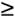

{% include JB/setup %}
{% raw %}
<div>


<a name="understandlk-CHP-7-SECT-2"></a>
<h3 class="docSection1Title">7.2. The Scheduling Algorithm</h3><a name="IDX-CHP-7-1840"></a>
<a name="IDX-CHP-7-1841"></a>
<a name="IDX-CHP-7-1842"></a>
<a name="IDX-CHP-7-1843"></a>
<a name="IDX-CHP-7-1844"></a>
<p class="docText1">The scheduling algorithm<a name="IDX-CHP-7-1845"></a> 
 used in earlier versions of Linux was quite simple and straightforward: at every process switch the kernel scanned the list of runnable processes, computed their priorities, and selected the "best" process to run. The main drawback of that algorithm is that the time spent in choosing the best process depends on the number of runnable processes; therefore, the algorithm is too costlythat is, it spends too much timein high-end systems running thousands of processes.</p>
<p class="docText1">The scheduling algorithm of Linux 2.6 is much more sophisticated. By design, it scales well with the number of runnable processes, because it selects the process to run in constant time, independently of the number of runnable processes. It also scales well with the number of processors because each CPU has its own queue of runnable processes. Furthermore, the new algorithm does a better job of distinguishing interactive processes and batch processes. As a consequence, users of heavily loaded systems feel that interactive applications are much more responsive in Linux 2.6 than in earlier versions.</p>
<p class="docText1">The scheduler always succeeds in finding a process to be executed; in fact, there is always at least one runnable process: the <span class="docEmphasis">swapper</span> process, which has PID 0 and executes only when the CPU cannot execute other processes. As mentioned in <a class="pcalibre5 docLink pcalibre1" href="understandlk-CHP-3.html#understandlk-CHP-3">Chapter 3</a>, every CPU of a multiprocessor system has its own <span class="docEmphasis">swapper</span> process with PID equal to 0.</p>
<p class="docText1">Every Linux process is always scheduled according to one of the following <span class="docEmphasis">scheduling classes</span><a name="IDX-CHP-7-1846"></a> 
:</p>
<a name="IDX-CHP-7-1847"></a><dl class="docText1"><dt class="calibre7"><br class="calibre7"/><p class="calibre14"><span class="docPubcolor"><span class="docPubcolor"><span class="docMonofont">SCHED_FIFO</span></span></span></p></dt>
<dd class="calibre20"><p class="docList">A First-In, First-Out real-time process. When the scheduler assigns the CPU to the process, it leaves the process descriptor in its current position in the runqueue list. If no other higher-priority real-time process is runnable, the process continues to use the CPU as long as it wishes, even if other real-time processes<a name="IDX-CHP-7-1847"></a> 
 that have the same priority are runnable.</p></dd><dt class="calibre7"><br class="calibre7"/><p class="calibre14"><span class="docPubcolor"><span class="docPubcolor"><span class="docMonofont">SCHED_RR</span></span></span></p></dt>
<dd class="calibre20"><p class="docList">A Round Robin real-time process. When the scheduler assigns the CPU to the process, it puts the process descriptor at the end of the runqueue list. This policy ensures a fair assignment of CPU time to all <tt class="calibre25">SCHED_RR</tt> real-time processes that have the same priority.</p></dd><dt class="calibre7"><br class="calibre7"/><p class="calibre14"><span class="docPubcolor"><span class="docPubcolor"><span class="docMonofont">SCHED_NORMAL</span></span></span></p></dt>
<dd class="calibre20"><p class="docList">A conventional, time-shared process.</p></dd></dl>
<p class="docText1">The scheduling algorithm behaves quite differently depending on whether the process is conventional or real-time.</p>
<a name="understandlk-CHP-7-SECT-2.1"></a>
<h4 class="docSection2Title">7.2.1. Scheduling of Conventional Processes</h4><a name="IDX-CHP-7-1848"></a>
<a name="IDX-CHP-7-1849"></a>
<a name="IDX-CHP-7-1850"></a>
<a name="IDX-CHP-7-1851"></a>
<p class="docText1">Every conventional process has its own <span class="docEmphasis">static priority</span>, which is a value used by the scheduler to rate the process with respect to the other conventional processes<a name="IDX-CHP-7-1852"></a> 
 in the system. The kernel represents the static priority of a conventional process with a number ranging from 100 (highest priority) to 139 (lowest priority); notice that static priority decreases as the values increase.</p>
<p class="docText1">A new process always inherits the static priority of its parent. However, a user can change the static priority of the processes that he owns by passing some "nice values" to the <tt class="calibre25">nice( )</tt> and <tt class="calibre25">setpriority( )</tt> system calls (see the section "<a class="pcalibre5 docLink pcalibre1" href="understandlk-CHP-7-SECT-6.html#understandlk-CHP-7-SECT-6">System Calls Related to Scheduling</a>" later in this chapter).</p>
<a name="understandlk-CHP-7-SECT-2.1.1"></a>
<h5 class="docSection3Title">7.2.1.1. Base time quantum</h5>
<p class="docText1">The static priority essentially determines the <span class="docEmphasis">base time quantum</span><a name="IDX-CHP-7-1853"></a> 
 of a process, that is, the time quantum duration assigned to the process when it has exhausted its previous time quantum. Static priority and base time quantum are related by the following formula:</p>
<p class="docText1"></p>
<p class="docText1">As you see, the higher the static priority (i.e., the lower its numerical value), the longer the base time quantum. As a consequence, higher priority processes usually get longer slices of CPU time with respect to lower priority processes. <a class="pcalibre5 docLink pcalibre1" href="#understandlk-CHP-7-TABLE-2">Table 7-2</a> shows the static priority, the base time quantum values, and the corresponding nice values for a conventional process having highest static priority, default static priority, and lowest static priority. (The table also lists the values of the interactive delta and of the sleep time threshold, which are explained later in this chapter.)</p>
<a name="understandlk-CHP-7-TABLE-2"></a><p class="calibre14"><table cellspacing="0" frame="hsides" rules="all" cellpadding="4" width="100%" class="calibre15"><caption class="calibre33"><h5 class="docFigureTitle">Table 7-2. Typical priority values for a conventional process</h5></caption><colgroup class="calibre16"><col class="calibre17"/><col class="calibre17"/><col class="calibre17"/><col class="calibre17"/><col class="calibre17"/><col class="calibre17"/></colgroup><thead class="calibre18"><tr class="calibre34"><th class="thead" scope="col"><p class="docText1"><span class="calibre5">Description</span></p></th><th class="thead" scope="col"><p class="docText1"><span class="calibre5">Static priority</span></p></th><th class="thead" scope="col"><p class="docText1"><span class="calibre5">Nice value</span></p></th><th class="thead" scope="col"><p class="docText1"><span class="calibre5">Base time quantum</span></p></th><th class="thead" scope="col"><p class="docText1"><span class="calibre5">Interactivedelta</span></p></th><th class="thead" scope="col"><p class="docText1"><span class="calibre5">Sleep time threshold</span></p></th></tr></thead><tr class="calibre2"><td class="docTableCell"><p class="docText2">Highest static priority</p></td><td class="docTableCell"><p class="docText2">100</p></td><td class="docTableCell"><p class="docText2">-20</p></td><td class="docTableCell"><p class="docText2">800 ms</p></td><td class="docTableCell"><p class="docText2">-3</p></td><td class="docTableCell"><p class="docText2">299 ms</p></td></tr><tr class="calibre2"><td class="docTableCell"><p class="docText2">High static priority</p></td><td class="docTableCell"><p class="docText2">110</p></td><td class="docTableCell"><p class="docText2"><tt class="calibre25">-</tt>10</p></td><td class="docTableCell"><p class="docText2">600 ms</p></td><td class="docTableCell"><p class="docText2"><tt class="calibre25">-</tt>1</p></td><td class="docTableCell"><p class="docText2">499 ms</p></td></tr><tr class="calibre2"><td class="docTableCell"><p class="docText2">Default static priority</p></td><td class="docTableCell"><p class="docText2">120</p></td><td class="docTableCell"><p class="docText2">0</p></td><td class="docTableCell"><p class="docText2">100 ms</p></td><td class="docTableCell"><p class="docText2">+2</p></td><td class="docTableCell"><p class="docText2">799 ms</p></td></tr><tr class="calibre2"><td class="docTableCell"><p class="docText2">Low static priority</p></td><td class="docTableCell"><p class="docText2">130</p></td><td class="docTableCell"><p class="docText2">+10</p></td><td class="docTableCell"><p class="docText2">50 ms</p></td><td class="docTableCell"><p class="docText2">+4</p></td><td class="docTableCell"><p class="docText2">999 ms</p></td></tr><tr class="calibre2"><td class="docTableCell"><p class="docText2">Lowest static priority</p></td><td class="docTableCell"><p class="docText2">139</p></td><td class="docTableCell"><p class="docText2">+19</p></td><td class="docTableCell"><p class="docText2">5 ms</p></td><td class="docTableCell"><p class="docText2">+6</p></td><td class="docTableCell"><p class="docText2">1199 ms</p></td></tr></table></p><br class="calibre7"/>
<a name="understandlk-CHP-7-SECT-2.1.2"></a>
<h5 class="docSection3Title">7.2.1.2. Dynamic priority and average sleep time</h5><a name="IDX-CHP-7-1854"></a>
<p class="docText1">Besides a static priority, a conventional process also has a <span class="docEmphasis">dynamic priority</span>, which is a value ranging from 100 (highest priority) to 139 (lowest priority). The dynamic priority is the number actually looked up by the scheduler when selecting the new process to run. It is related to the static priority by the following empirical formula:</p>
<pre class="calibre27">
<span class="docEmphBoldItalic">dynamic priority</span> = max (100, min (  <span class="docEmphBoldItalic">static priority</span> - bonus<a name="IDX-CHP-7-1855"></a> 
 + 5, 139))   (2)
</pre><br class="calibre7"/>
<p class="docText1">The <span class="docEmphasis">bonus</span> is a value ranging from 0 to 10; a value less than 5 represents a penalty that lowers the dynamic priority, while a value greater than 5 is a premium that raises the dynamic priority. The value of the bonus, in turn, depends on the past history of the process; more precisely, it is related to the <span class="docEmphasis">average sleep time</span><a name="IDX-CHP-7-1856"></a> 
 of the process.</p>
<p class="docText1">Roughly, the average sleep time is the average number of nanoseconds that the process spent while sleeping. Be warned, however, that this is not an average operation on the elapsed time. For instance, sleeping in <tt class="calibre25">TASK_INTERRUPTIBLE</tt> state contributes to the average sleep time in a different way from sleeping in <tt class="calibre25">TASK_UNINTERRUPTIBLE</tt> state. Moreover, the average sleep time decreases while a process is running. Finally, the average sleep time can never become larger than 1 second.</p>
<p class="docText1">The correspondence between average sleep times and bonus values is shown in <a class="pcalibre5 docLink pcalibre1" href="#understandlk-CHP-7-TABLE-3">Table 7-3</a>. (The table lists also the corresponding granularity of the time slice, which will be discussed later.)</p>
<a name="understandlk-CHP-7-TABLE-3"></a><p class="calibre14"><table cellspacing="0" frame="hsides" rules="all" cellpadding="4" width="100%" class="calibre15"><caption class="calibre33"><h5 class="docFigureTitle">Table 7-3. Average sleep times, bonus values, and time slice granularity</h5></caption><colgroup class="calibre16"><col class="calibre17"/><col class="calibre17"/><col class="calibre17"/></colgroup><thead class="calibre18"><tr class="calibre34"><th class="thead" scope="col"><p class="docText1"><span class="calibre5">Average sleep time</span></p></th><th class="thead" scope="col"><p class="docText1"><span class="calibre5">Bonus</span></p></th><th class="thead" scope="col"><p class="docText1"><span class="calibre5">Granularity</span></p></th></tr></thead><tr class="calibre2"><td class="docTableCell"><p class="docText2">Greater than or equal to 0 but smaller than 100 ms</p></td><td class="docTableCell"><p class="docText2">0</p></td><td class="docTableCell"><p class="docText2">5120</p></td></tr><tr class="calibre2"><td class="docTableCell"><p class="docText2">Greater than or equal to 100 ms but smaller than 200 ms</p></td><td class="docTableCell"><p class="docText2">1</p></td><td class="docTableCell"><p class="docText2">2560</p></td></tr><tr class="calibre2"><td class="docTableCell"><p class="docText2">Greater than or equal to 200 ms but smaller than 300 ms</p></td><td class="docTableCell"><p class="docText2">2</p></td><td class="docTableCell"><p class="docText2">1280</p></td></tr><tr class="calibre2"><td class="docTableCell"><p class="docText2">Greater than or equal to 300 ms but smaller than 400 ms</p></td><td class="docTableCell"><p class="docText2">3</p></td><td class="docTableCell"><p class="docText2">640</p></td></tr><tr class="calibre2"><td class="docTableCell"><p class="docText2">Greater than or equal to 400 ms but smaller than 500 ms</p></td><td class="docTableCell"><p class="docText2">4</p></td><td class="docTableCell"><p class="docText2">320</p></td></tr><tr class="calibre2"><td class="docTableCell"><p class="docText2">Greater than or equal to 500 ms but smaller than 600 ms</p></td><td class="docTableCell"><p class="docText2">5</p></td><td class="docTableCell"><p class="docText2">160</p></td></tr><tr class="calibre2"><td class="docTableCell"><p class="docText2">Greater than or equal to 600 ms but smaller than 700 ms</p></td><td class="docTableCell"><p class="docText2">6</p></td><td class="docTableCell"><p class="docText2">80</p></td></tr><tr class="calibre2"><td class="docTableCell"><p class="docText2">Greater than or equal to 700 ms but smaller than 800 ms</p></td><td class="docTableCell"><p class="docText2">7</p></td><td class="docTableCell"><p class="docText2">40</p></td></tr><tr class="calibre2"><td class="docTableCell"><p class="docText2">Greater than or equal to 800 ms but smaller than 900 ms</p></td><td class="docTableCell"><p class="docText2">8</p></td><td class="docTableCell"><p class="docText2">20</p></td></tr><tr class="calibre2"><td class="docTableCell"><p class="docText2">Greater than or equal to 900 ms but smaller than 1000 ms</p></td><td class="docTableCell"><p class="docText2">9</p></td><td class="docTableCell"><p class="docText2">10</p></td></tr><tr class="calibre2"><td class="docTableCell"><p class="docText2">1 second</p></td><td class="docTableCell"><p class="docText2">10</p></td><td class="docTableCell"><p class="docText2">10</p></td></tr></table></p><br class="calibre7"/>
<p class="docText1">The average sleep time is also used by the scheduler to determine whether a given process should be considered interactive or batch. More precisely, a process is considered "interactive" if it satisfies the following formula:</p>
<pre class="calibre27">
<span class="docEmphasis">dynamic priority</span>   3 x   <span class="docEmphasis">static priority</span> / 4 + 28       (3)
</pre><br class="calibre7"/>
<p class="docText1">which is equivalent to the following:</p>
<pre class="calibre27">
<span class="docEmphasis">bonus</span> - 5   <span class="docEmphasis">static priority</span> / 4 - 28
</pre><br class="calibre7"/>
<p class="docText1">The expression <span class="docEmphasis">static priority</span> / 4 - 28 is called the <span class="docEmphasis">interactive delta</span><a name="IDX-CHP-7-1857"></a> 
; some typical values of this term are listed in <a class="pcalibre5 docLink pcalibre1" href="#understandlk-CHP-7-TABLE-2">Table 7-2</a>. It should be noted that it is far easier for high priority than for low priority processes to become interactive. For instance, a process having highest static priority (100) is considered interactive when its bonus value exceeds 2, that is, when its average sleep time exceeds 200 ms. Conversely, a process having lowest static priority (139) is never considered as interactive, because the bonus value is always smaller than the value 11 required to reach an interactive delta equal to 6. A process having default static priority (120) becomes interactive as soon as its average sleep time exceeds 700 ms.</p>
<a name="understandlk-CHP-7-SECT-2.1.3"></a>
<h5 class="docSection3Title">7.2.1.3. Active and expired processes</h5><a name="IDX-CHP-7-1858"></a>
<a name="IDX-CHP-7-1859"></a>
<a name="IDX-CHP-7-1860"></a>
<p class="docText1">Even if conventional processes having higher static priorities get larger slices of the CPU time, they should not completely lock out the processes having lower static priority. To avoid process starvation, when a process finishes its time quantum, it can be replaced by a lower priority process whose time quantum has not yet been exhausted. To implement this mechanism, the scheduler keeps two disjoint sets of runnable processes:</p>
<a name="IDX-CHP-7-1861"></a><dl class="docText1"><dt class="calibre7"><br class="calibre7"/><p class="calibre14"><span class="docPubcolor"><span class="docEmphasis">Active processes</span></span></p></dt>
<dd class="calibre20"><p class="docList">These runnable processes have not yet exhausted their time quantum and are thus allowed to run.</p></dd><dt class="calibre7"><br class="calibre7"/><p class="calibre14"><span class="docPubcolor"><span class="docEmphasis">Expired processes</span></span></p></dt>
<dd class="calibre20"><p class="docList">These runnable processes have exhausted their time quantum and are thus forbidden to run until all active processes<a name="IDX-CHP-7-1861"></a> 
 expire.</p></dd></dl>
<p class="docText1">However, the general schema is slightly more complicated than this, because the scheduler tries to boost the performance of interactive processes. An active batch process that finishes its time quantum always becomes expired. An active interactive process that finishes its time quantum usually remains active: the scheduler refills its time quantum and leaves it in the set of active processes. However, the scheduler moves an interactive process that finished its time quantum into the set of expired processes if the eldest expired process has already waited for a long time, or if an expired process has higher static priority (lower value) than the interactive process. As a consequence, the set of active processes will eventually become empty and the expired processes will have a chance to run.</p>
<a name="understandlk-CHP-7-SECT-2.2"></a>
<h4 class="docSection2Title">7.2.2. Scheduling of Real-Time Processes</h4>
<p class="docText1">Every real-time process is associated with a <span class="docEmphasis">real-time priority</span>, which is a value ranging from 1 (highest priority) to 99 (lowest priority). The scheduler always favors a higher priority runnable process over a lower priority one; in other words, a real-time process inhibits the execution of every lower-priority process while it remains runnable. Contrary to conventional processes, real-time processes are always considered active (see the previous section). The user can change the real-time priority of a process by means of the <tt class="calibre25">sched_setparam( )</tt><a name="IDX-CHP-7-1862"></a> 
 and <tt class="calibre25">sched_setscheduler( )</tt><a name="IDX-CHP-7-1863"></a> 
 system calls (see the section "<a class="pcalibre5 docLink pcalibre1" href="understandlk-CHP-7-SECT-6.html#understandlk-CHP-7-SECT-6">System Calls Related to Scheduling</a>" later in this chapter).</p>
<p class="docText1">If several real-time runnable processes have the same highest priority, the scheduler chooses the process that occurs first in the corresponding list of the local CPU's runqueue (see the section "<a class="pcalibre5 docLink pcalibre1" href="understandlk-CHP-3-SECT-2.html#understandlk-CHP-3-SECT-2.2.5">The lists of TASK_RUNNING processes</a>" in <a class="pcalibre5 docLink pcalibre1" href="understandlk-CHP-3.html#understandlk-CHP-3">Chapter 3</a>).</p>
<p class="docText1">A real-time process is replaced by another process only when one of the following events occurs:</p>
<ul class="calibre11"><li class="calibre12"><p class="docText1">The process is preempted by another process having higher real-time priority.</p></li><li class="calibre12"><p class="docText1">The process performs a blocking operation, and it is put to sleep (in state <tt class="calibre25">TASK_INTERRUPTIBLE</tt> or <tt class="calibre25">TASK_UNINTERRUPTIBLE</tt>).</p></li><li class="calibre12"><p class="docText1">The process is stopped (in state <tt class="calibre25">TASK_STOPPED</tt> or <tt class="calibre25">TASK_TRACED</tt>), or it is killed (in state <tt class="calibre25">EXIT_ZOMBIE</tt> or <tt class="calibre25">EXIT_DEAD</tt>).</p></li><li class="calibre12"><p class="docText1">The process voluntarily relinquishes the CPU by invoking the <tt class="calibre25">sched_yield( )</tt><a name="IDX-CHP-7-1864"></a> 
 system call (see the section "<a class="pcalibre5 docLink pcalibre1" href="understandlk-CHP-7-SECT-6.html#understandlk-CHP-7-SECT-6">System Calls Related to Scheduling</a>" later in this chapter).</p></li><li class="calibre12"><p class="docText1">The process is Round Robin real-time (<tt class="calibre25">SCHED_RR</tt>), and it has exhausted its time quantum.</p></li></ul>
<p class="docText1">The <tt class="calibre25">nice( )</tt><a name="IDX-CHP-7-1865"></a> 
 and <tt class="calibre25">setpriority( )</tt><a name="IDX-CHP-7-1866"></a> 
 system calls, when applied to a Round Robin real-time process, do not change the real-time priority but rather the duration of the base time quantum. In fact, the duration of the base time quantum of Round Robin real-time processes does not depend on the real-time priority, but rather on the static priority of the process, according to the formula (1) in the earlier section "<a class="pcalibre5 docLink pcalibre1" href="#understandlk-CHP-7-SECT-2.1">Scheduling of Conventional Processes</a>."</p>
<a href="31071535.html"></a>
<br class="calibre7"/>

</div>

{% endraw %}

